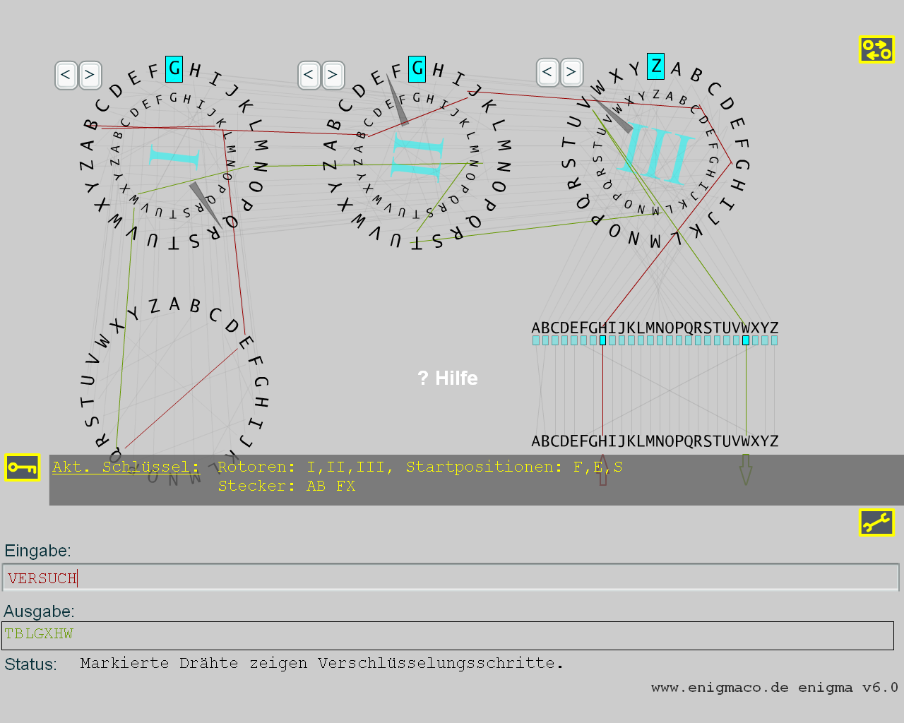

Geschichte
Die Rotormaschine "Enigma" wurde 1923 vom deutschen Erfinder und Entwickler Arthur Scherbius gebaut. Sie sollte zur Verschlüsselung von Nachrichten in der Wirtschaft dienen. In den 30er Jahren des vergangenen Jahrhunderts entdeckte das deutsche Militär die Enigma, ließ das sogenannte Steckerbrett hinzufügen und die Rotor-Verdrahtungen ändern. Im 2. Weltkrieg benutzte die deutsche Kriegsmaschinerie ca. 200.000 dieser Kryptosysteme, um den Austausch geheimer Informationen zu sichern.
Aufbau und Funktionsweise
Die Enigma besteht im wesentlichen aus der Tastatur, dem Steckerbrett, drei Rotoren (auch Walzen genannt) und dem sogenannten Reflektor, einer feststehenden Mimik, die zur Stromumlenkung dient. Die Originalmaschine ordnete jedem via Tastatur eingegebenen Buchstaben einen verschlüsselten Buchstaben zu, indem sie einen sich immer wieder neu konfigurierenden Stromkreis schloss.
Grafische Aufteilung der Komponenten
Die Anordnung der drei Rotoren erfolgte wie bei der echten Enigma: Der rechte Rotor wird als erster Rotor ("schneller Rotor", der sich bei jeder Eingabe ändert) bezeichnet. Die römische Zahl, die in der Mitte eines jeden Rotors eingezeichnet ist, zeigt, welcher der 5 Rotoren (I, II, III, IV oder V) eingesetzt wurde. Auch die Verdrahtung auf jedem Rotor entspricht der Original-Enigma.
Systemvoraussetzungen
Sie brauchen einen flinken Rechner, eine Auflösung von mindestens 800x600 Pixeln und Truecolor-Farbtiefe.
Eingabebeispiel
Öffnen Sie das Maschinen-Fenster, klicken Sie auf das Feld "Eingabe:" und geben Sie dort "c" ein. Das Steckerbrett lässt den Buchstaben C unverändert auf C, der Verbindungsdraht erscheint rot markiert. Nun wandert der Strom zum rechten Rotor, zu dessen Buchstaben A. A ist über die Rotorverdrahtung mit B verknüpft. Der Strom wandert zum zweiten Rotor, der G mit R verknüpft, im linken Rotor wird dann V auf I abgebildet. Im nächsten Schritt wird im Reflektor B auf R weitergeleitet. Nun wandert der Strom auf dem grün markierten Weg wieder zurück durch die Rotoren zum Steckerbrett, wo Q unverändert auf Q geleitet wird. Als Ergebnis wurde also C zu Q verschlüsselt.
Geben Sie nun erneut "c" ein, so sehen Sie, dass nun C zu R verschlüsselt wird. Vor jedem Tastendruck nämlich wird der rechte Rotor um einen Schritt weiter nach links gedreht.
Sonderfall: Dreht sich der rechte Rotor von Stellung V nach W, so wandert der zweite Rotor ebenfalls um einen Schritt weiter nach links. Für den mittleren Rotor gilt die entsprechende Regel. Die Stellung der Rotoren ändert sich also nach dem Prinzip eines Kilometerzählers. Die sogenannten "Notches" regeln, welche Rotorbewegung eine Bewegung seines linken Nachbarn auslöst. Die Position der Notches sowie die Verdrahtung waren fest vorgegeben.
Wie verschlüssele ich einen Text?
Durch Drücken des "Zurück"-Buttons (Reset) setzen Sie die gesamte Maschine in den Urzustand. Sie müssen sich zunächst einen Schlüssel ausdenken. Ein Schlüssel besteht hier aus drei Teilen:
a) Zuerst geben Sie an, welche Buchstabenpaare im Steckerbrett vertauscht werden sollen, z.B. A mit B und auch F mit X.
b) Zweitens können Sie durch Klicken auf "Exchange Rotors" eine Kombination von drei Rotoren auswählen. Zur Verfügung stehen die fünf Rotoren I, II, III, IV und V.
c) Als dritter Teil ist die Stellung der drei Rotoren zu Beginn der Texteingabe zu notieren, z.B. F-E-S.
Geben Sie nun z.B. in der Input-Zeile den Klartext "versuch" ein. In der Zeile "Ausgabe:" sollte der verschlüsselte Text "TBLGXHW" erscheinen. Bis auf die Anzahl der Buchstaben hat der verschlüsselte Text nur noch wenig gemein mit dem Klartext.

Wie ENTschlüssele ich einen Text?
Da es sich hier um ein symmetrisches Kryptosystem handelt, kann der verschlüsselte Text mit dem *gleichen* Schlüssel wieder den Klartext hervorbringen. Hierzu löschen Sie mit der Backspace-Taste alle Eingaben in der Input-Zeile (die Rotoren drehen sich rückwärts), und geben Sie statt dessen den Text "TBLGXHW" in die Input-Zeile ein. Wenn sie "VERSUCH" erhalten, ist alles bestens.
Limitierungen des Modells
Für Detailverliebte möchte ich einige Vereinfachungen nicht verschweigen. Die Original-Enigma bot neben den gezeigten Funktionen noch sogenannte Ringe. Diese waren an den Rotoren angebracht, und die 26 verschiedenen Ring-Stellungen konnten das Alphabet eines Rotors um eine additive Größe verschieben.
Schließlich gab es noch die gefürchtete Enigma mit *vier* Rotoren (M4), die in den letzten Kriegsjahren in U-Booten eingesetzt wurde und für eine Vergrößerung des Schlüsselraumes um den Faktor 26*26 sorgte (Anzahl Rotorstellungen mal Anzahl der Ringstellungen).
Links
- In puncto Detailtreue ist folgende Enigma-Simulation sehr zu empfehlen (statt Flash wurde hier Java verwendet). Sie können gerne den Code der beiden verschiedenen Simulatoren vergleichen. Beachten Sie dabei bitte, dass unter "Advanced Settings" im Applet der Reflektor von "C" auf "B" eingestellt sein muss, um mit der Konfiguration meiner Flash-Simulation übereinzustimmen. Reflektor "C" wird nur bei der Vier-Rotor Enigma verwendet, die mit dem Applet ebenfalls simuliert werden kann.
- Eine weitere sehr interessante Webseite ist Jim Oram's www.enigma-replica.com, dort können Sie Jims Fortschritte bei der Rekonstruktion einer Vier-Rotor Enigma (M4) bestaunen.
- In CrypTool v2 (www.cryptool.org) ist sowohl eine Simulation der Enigma als auch eine Kryptoanalyse davon enthalten.